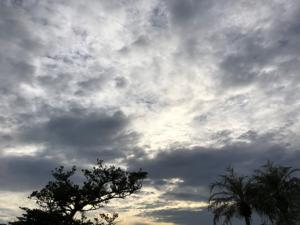

うるがいの話 ある日
最新: 顏写真【うるがいの話 ある日】とは 一日だけのプログです
『うるがいの話』の最新一日だけのプログで、通信料が少なく経済的だ。カニの画像をクリックすると全ての日付が載る『うるがいの話』サイトを表示します
|
|
【うるがいの話】 うるがい(ｳﾙｶﾞｲ urugai)とは、『もずくがに』の名前でとても大きくなります。 |
|---|---|
|
|
【カミマヤーの話】 猫のことを方言でマヤーといいます。カミマヤー（kamimayaa）とは、神の猫のことです。 |
|
【たながぁの音楽】 たながぁ（ﾀﾅｶﾞｰ tanagaa）とは手長えびのことで、何種類かあり大きいのは車 エビぐらいになります。 |

|
【ぶながぁの話】 ぶながぁ(ﾌﾞﾅｶﾞｰ bunagaa)とは、赤い髪の毛、赤い身体、そして身長は１ｍ２０ｃｍ ぐらい、川の蟹を食べているの目撃された。場所は沖縄県国頭郡大宜味村のと ある村僕の隣近所に住んでいる爺さんから、聞いた話です。 |
|
|
【ギーマの話】 ギーマ(giima)とは、山原の里山に咲くスズランに似た、 花を付けます。実は食べられます、 気が付くと口の周りが紫になっています。 |
2022年11月05日 (土）顏写真
15:15

１０月１７日に投函した個人番号カード交付申請書が、帰ってきた。
個人番号カード交付申請書について、以下の理由により受付できませんでした
。大変お手数ですが、あらためてお手続きいただきますよう、ご案内申し上げ
ます。
◆再手続きが必要な理由（顏写真）
壁／天井の模様、被写体以外の物体や被写体の影等が写り込んでいるため受付
できません。(2E)
※背景については無地 (均一な)の淡い色の壁の前などで撮影してください。
ウーン、どこがいけないのだろうとヨメのお母さん写真をじっくり眺める。分
かった、座った椅子の背もたれが写っている。ケッ、これでダメとは。
と、ゴタゴタしていると仕事帰りの子供から、『車を運転していると赤い警告
灯が光っている』と連絡がきた。車の取扱説明書を調べると、どうも水温警告
灯は、点灯している模様だ。冷却水が少なくなってオーバーヒートの状態と分
かる。子供の車は、半年ごとに点検サービスを契約しているため、新車を購入
してから１０年近く、一度も冷却水を自分で入れたことはない（はず）。一カ
月前に車検を済ませたばかり、工場でチェックし忘れたのか？、子供は給油所
で、冷却水を入れることにした。その後は、蛍光灯が点灯したとの連絡は無い
ので、大丈夫だったのだろう。なぜか、ゴタゴタは連続するのである。
１５時１０分 ビットコインの総資産 ￥９、０８８↑